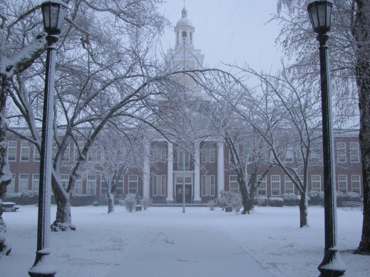

← Return to Volunteer Page

Time Commitment of approximately 10 hours/month during the 4 month planning period.
Participation will primarily virtual and over email, with occasional in-person meetings.
We are seeking 1 leader for this role.
This leader may have experience in marketing, event planning, or simply an interest in
helping coordinate this event.
Our summer all-class picnic was cancelled due to coronavirus, and are hoping to host an event later in winter to make up for the
lost social time. Alumni have expressed interest in a catered dinner, and dance and we have a group of volunteers excited to make this event happen.
The chair of this event will coordinate our volunteers and bring their ideas to life! (Perhaps this can become an annaul event too?)
Duties & Responsibilities
- Oversee coordination of venue, catering, and entertainment for the event.
- The Chairperson does not necessarily make all decisions, but delegates tasks and ensures Committee consensus on decisions.
- Oversee recruitment of event volunteers.
- If additional volunteers are needed the chairperson will communicate this need to the Executive Committee and the Communications Committee to
collaborate on recruitment efforts.
- Oversee advertisement of the event and coordinate with the Communications Committee.
- The chairperson is not necessarily the contact for the Communications Committee, but ensures that communication is established and followed through.
- Host planning meetings at least once per month during planning period (4 month time period).
- Meetings can take the form of in person or virtual/email depending upon the needs of those participating.
- Meetings may need to take place more frequently than listed, up to the discretion of the Committee.
- Attend Executive Committee meetings to coordinate needs to and from the Event Committee.
- Executive Committee meetings happen every other month and the chairperson should attend all held during the planning period.
- Oversee the creation of the event budget, and present to the Executive Committee.
- Before any reservations or deposits are made, the budget must be presented by the chairperson to the Executive Committee for approval.
- Oversee all vendor connections associated with the event.
- The chairperson is not necessarily the contact for any vendor, but ensures that communication is established and followed through by another volunteer.
Interested in volunteering? Send an email to our Association President at president@rooseveltalumni.org
with the subject line "Winter Event Chair" to learn more.
We can't wait to have you join us!